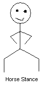
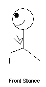

Throwing Edged Weapons
by
Thomas E. Vachberin
|
In the type of anti-freedom world we live in today it would be wise to perfect your aim at close and long ranges with a variety of arms. Guns are not the only weapons you should be skilled in using and have on hand. Though I may go over them or other such requested weaponry in future articles. You don't always have time to reload your gun, and this can pose to be quite a problem. So, why not take up various other arts such as knife or axe throwing. There are numerous age-old weapons such as bows, blowguns, and Chinese throwing stars that can really help you when you're either out of ammo, or just don't have enough time to reload.
Axe throwing So all and all when it comes to picking a throwing axe you should if you can buy one made for throwing. If you can't get an axe made for throwing I would go for a plain wooden one with a duct tape grip. If neither of those is possible you can still use a plastic gripped axe but that's the last option you should consider. When it comes to choosing the weight of an axe you should keep in mind a few things. The lighter the axe the less power you will have to put into throwing it. Also with a lighter axe it is easier for you to keep your wrist straight when throwing. The down side to lighter axes is the force your throw delivers won't be as great as with a heavier axe. With either a heavy or a light axe how you aim shouldn't change. Gravity has an equal effect on the fall of all objects. The only exception to this is if the weight of an object is spread out over enough of a surface for the opposite force of the air under it to slow down the fall, but this does not effect the axe. The best metal for the head of a throwing axe is going to be low chromium content steel. This will allow the axe head to keep its edge better. You don't want the Chromium content too low though because this will take away from the steel's ability to take blows without shattering. For axe throwing I recommend minimum stainless steel which has 12% chromium. This allows the steel to hold an edge well enough and will resist stains as well as give it the ability to handle blows. Though if you don't want to get into all this, whatever the axe comes with should work well enough.
2. Your stance is very important without it I don't care how well you got the rest of the technique down, you wont be very accurate or consistent. First you should keep your feet about shoulder length apart so that you're well balanced. Now bring the foot that coincides with your throwing arm about 6 inches to 1 foot forward so that you're stable and point your foot at the intended target; if you're looking for something to connect the stance to it is similar to that used to throw a football. Before the throw while you're aiming you should stand straight. 3. Finally what you've all been waiting for, the throw. Now first off you want to keep your wrist aligned with your lower arm and you shouldn't snap or flick it during the throw. According to how you feel you may want to keep your arm close to you side or you may want to have it a little farther out. Bring the axe back up to your ear and take in a breath and hold it for increased concentration and stability (Don't take too much time holding your breath and concentrating though.) Now bring the axe forward from your side to in front of your face. While starting out your throw and you may want to try putting you back into it. When your hand is level or close to level with your face release the axe sending it towards your target. If you find you're too hesitant because you're nervous while throwing try thinking of something pleasant in the back of your mind. If you can't come up with anything, think of a lime green cream filled Popsicle on a during a hot summer day.
Chinese Stars
2. The stance used in throwing Chinese stars is very different than that of an axe. Plant you feet firmly in a "horse" stance.
 3. Bring Chinese throwing star up to your ear with your throwing hand, your palm facing the target. Now as you throw step into a "front" stance.
 Release the star just as your arm reaches horizontal. The ninjas released with the spirit of "pressing" the Chinese star towards the target with their mind. Who knows it might help you too.
Poisons
Practice
Did you like this article?
|